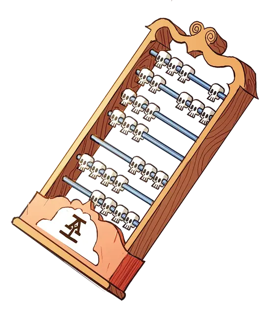

Счёты оккультиста
Occultant Abacus
Чудесный предмет, редкость варьируется (1-й ранг - обычный, 2-й ранг - необычный, 3-й ранг - редкий, 4-й ранг - очень редкий, требуется настройка)

Головной офис предоставляет вам в пользование уникальный предмет, известный как счеты оккультиста (иногда их просто называют оккультными), бусины которых напоминают крошечные черепа.
Прочтение убийства. При получении 1-го ранга ваши счеты оккультиста не только отслеживают убийства вашей франшизы, но и помогают вам определять влияние этих убийств на судьбу франшизы. Вы можете течение 1 минуты изучать существо, убитое кем-то из вашей франшизы в течение последних 24 часов, после чего предоставить персонажу, убившему его, к10. Один раз в течение следующего часа этот персонаж может добавить к10 к броску атаки, проверке характеристики или спасброску. Если не понятно, кто именно нанёс смертельный удар, вы предоставляете это преимущество случайному существу, участвовавшему в бою. Как только вы используете это свойство, вы не можете использовать его повторно, пока не закончите продолжительный отдых.
| к6 | Чтение |
| 1 | Использование крошечных ручных мехов для закачивания последнего дыхания в труп. |
| 2 | Чтение внутренностей с помощью специальных очков для чтения внутренностей. |
| 3 | Сжигая маленький кусочек тела и выискивая очертания в дыму. |
| 4 | Осторожное, рассудительное, профессиональное предположение. |
| 5 | Тщательные измерения. Расстояние между ноздрями. Точные данные о разнице между указательным и средним пальцами. Эластичность мочки уха. |
| 6 | Вы долго и внимательно рассматриваете убитого, а затем принимаете решение, основываясь на том, кто из коллег по франшизе был добр к вам в последнее время. |
Мистический оккультист. При получении 2-го ранга, ваши счеты оккультиста становятся необычным магическим предметом, который может отслеживать как уничтоженные жизни, так и спасенные. Держа свои счеты оккультиста в пределах 5 футов от существа, убитого в течение последних 24 часов, вы можете наложить заклинание гадание [augury]. Действие, о котором вы узнаете с помощью заклинания, не должен быть связано с мёртвым существом. Это свойство счетов оккультиста не может быть использовано повторно до следующего рассвета.
Покажи своих мертвецов. Кроме того, при получении 2-го ранга вы восстанавливаете использование «Прочтение убийства» после окончания короткого или продолжительного отдыха.
Бусина мгновенной кармы. При получении 3-го ранга одна из бусин на ваших счетах оккультиста концентрирует силу мгновенной кармы, превращая оккультные счеты в редкий магический предмет. Реакцией вы можете нацелиться на одно видимое существо, которое собирается атаковать, совершить проверку характеристики или спасбросок, предоставив ему преимущество, либо наложив помеху на данный бросок. После использования бусина рассыпается в пыль, вновь появляясь на ваших оккультных счетах на следующем рассвете.
Бусина отложенной кармы. При получении 4-го ранга одна из бусин на ваших счетах оккультиста позволяет вам направлять карму туда, где она необходима, превращая счеты оккультиста в очень редкий магический предмет. Пока бусина не используется, вы всегда знаете, когда любое существо, которое вы видите, собирается совершить проверку характеристики, бросок атаки или спасбросок с помехой. Когда данный бросок совершен, вы можете реакцией, дать к10 другому существу, которое вы можете видеть. Это существо может добавить к10 к любой проверке характеристики, броску атаки или спасброску, который оно совершит в течение следующей 1 минуты. При использовании бусина рассыпается в пыль, вновь появляясь на ваших счетах оккультиста на следующем рассвете.
Восстановление баланса. При получении 4-го ранга, вы знаете, что смерть существа иногда имеет непредвиденные последствия. В течение семи дней после смерти существа вы можете использовать свои счеты оккультиста, чтобы узнать способы обратить вспять или смягчить события, вызванные данной смертью. Действием совершите проверку Интеллекта (Религия) Сл 15. При успехе вы узнаёте соответствующую информацию, основанную на природе существа и его месте в мире.
Если вы проваливает проверку, то данное свойство счет оккультиста не может быть использовано снова до следующего рассвета. Если вы преуспеете в проверке, то это свойство не может быть использовано снова до рассвета через семь дней.